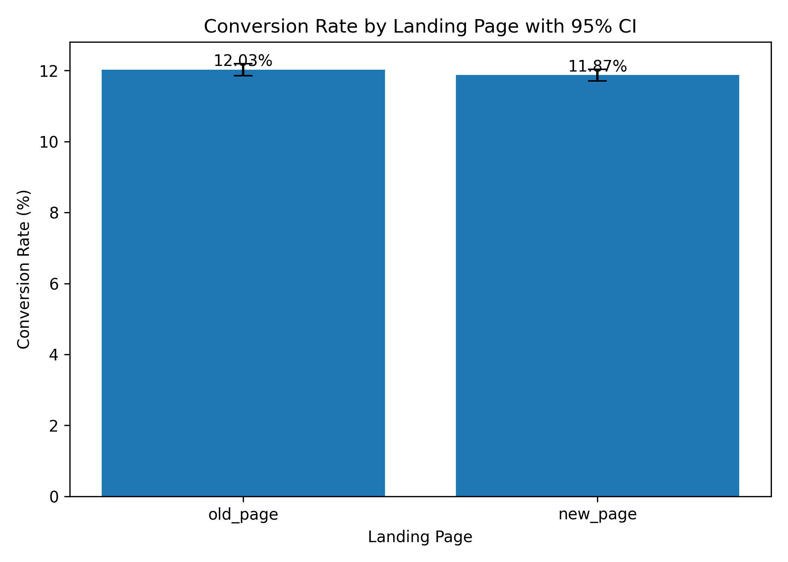
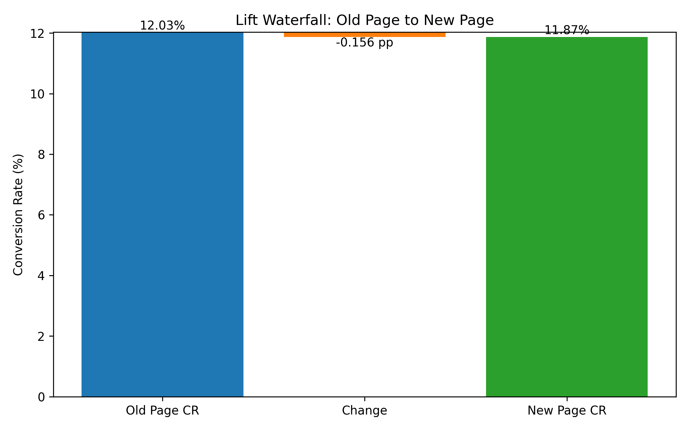
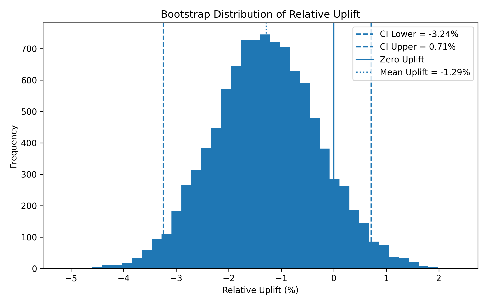
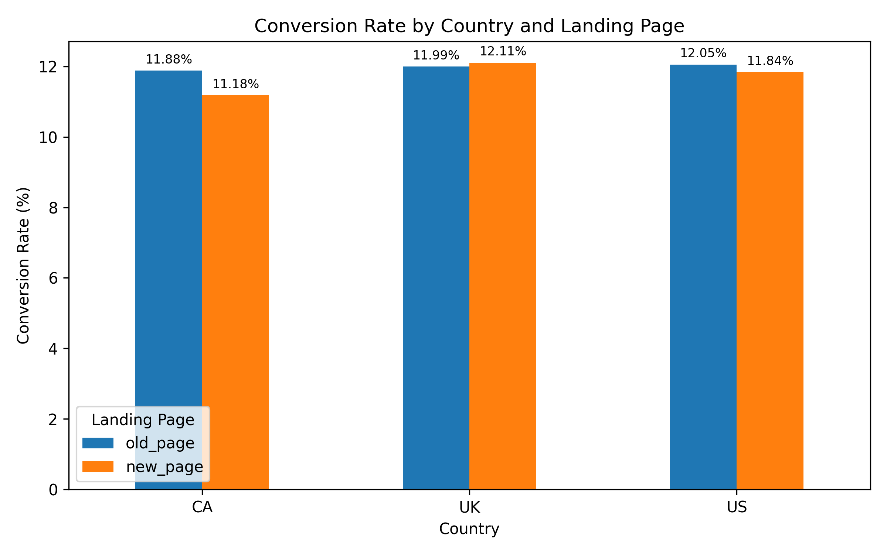
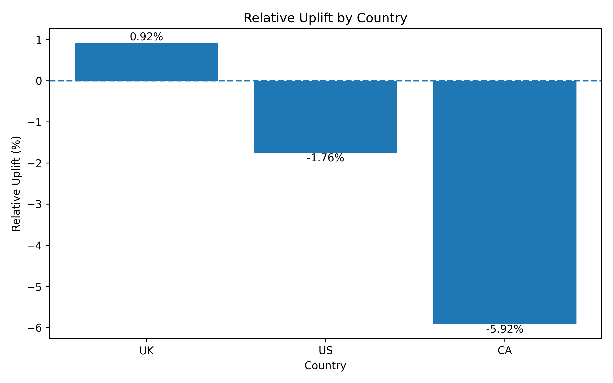
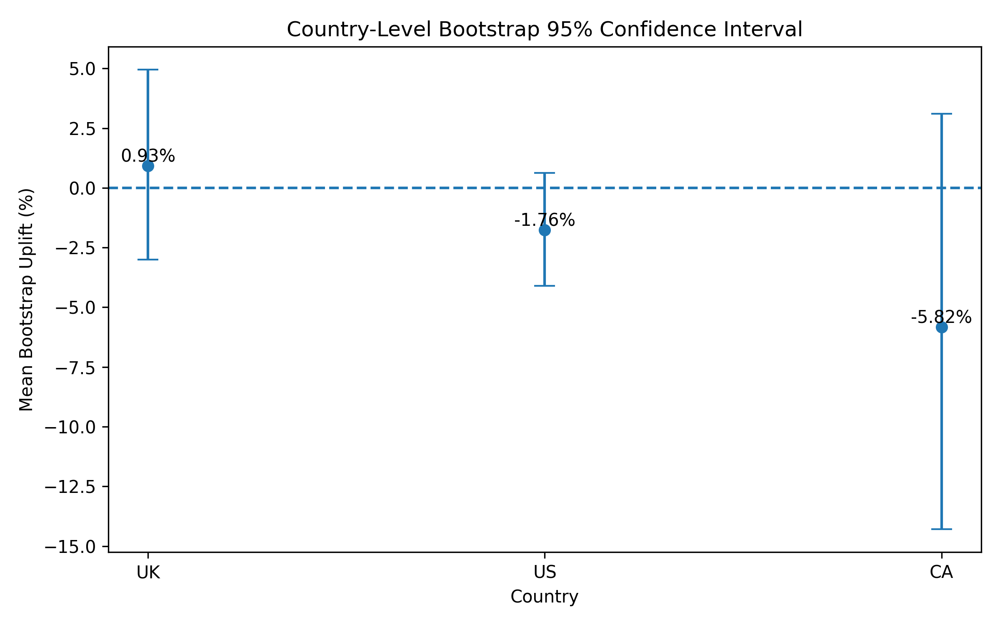

DAP391m Project · E-Commerce Experiment Analysis · Dataset 2022
Checkout Page
A/B Test
Analysis
End-to-end statistical evaluation of a redesigned checkout page across 288,541 users in 3 markets, using z-test, bootstrap resampling, and logistic regression.
Total Users
288K
144K per group
Relative Uplift
-1.30%
new vs old page
P-Value
0.1953
α = 0.05 threshold
Verdict
No Rollout
insufficient evidence
Analysis Pipeline
Data Preprocessing
✓ Complete
CR Analysis & Z-Test
✓ Complete
Bootstrap CI
✓ Complete
Country Segment
✓ Complete
Logistic Regression
✓ Complete
Bayesian Testing
→ Next Step
Final Report
→ Next Step
01 — Research Design
Hypothesis &
Experimental Setup
H₀ — Null Hypothesis
CR_new = CR_old
The redesigned checkout page produces no meaningful difference in conversion rate. Any
observed difference is attributable to random variation.
H₁ — Alternative Hypothesis
CR_new ≠ CR_old
The redesigned checkout page produces a statistically significant difference in
conversion rate — either positive or negative.
| Parameter | Value | Description |
|---|---|---|
| Test Type | Two-tailed | Detects both improvement and degradation |
| Significance Level (α) | 0.05 | 5% false positive rate threshold |
| Control Group | old_page (group = control) | Existing checkout design |
| Treatment Group | new_page (group = treatment) | Redesigned checkout page |
| Outcome Variable | converted ∈ {0, 1} | Binary: 1 = purchased, 0 = did not purchase |
Pre-processing integrity: After mismatch filtering (removing users assigned to the wrong page
variant) and deduplication, the treatment and control groups remained well-balanced: 144,226 control vs 144,315
treatment users. Country and time_bucket distributions were also nearly identical across groups, confirming
randomization integrity post-cleaning.
02 — Primary Results
Conversion Rate
Analysis
Old Page CR (Control)
12.03%
17,349 conversions / 144,226 users
New Page CR (Treatment)
11.87%
17,134 conversions / 144,315 users
Absolute Lift
-0.156pp
percentage points difference
Conversion Rate Comparison with 95% CI

Comparison of conversion rates between old_page (12.03%) and new_page (11.87%) with 95% confidence interval error bars. The two CIs overlap substantially, indicating the difference is not statistically significant.
Lift Waterfall: Old Page → New Page

Waterfall chart showing the transition from Old Page CR (12.03%) to New Page CR (11.87%), with an absolute drop of -0.156 percentage points — a very small and statistically unreliable decline.
Z-Statistic
-1.2949
P-Value
0.1953
Critical Value (α=0.05)
±1.96
Since p-value (0.1953) > α (0.05), we fail to reject the null hypothesis.
The observed -1.30% relative drop in conversion rate is not statistically significant —
it falls within the expected range of random variation under H₀.
03 — Uncertainty Estimation
Bootstrap
Confidence Interval
Bootstrap Uplift Distribution (10,000 iterations)

Distribution centered around -1.29%, 95% CI crosses zero confirming non-significance.
95% Confidence Interval Summary
Mean bootstrap uplift
-1.29%
-3.24%
CI Lower
0%
CI Upper
+0.71%
The 95% CI [-3.24%, +0.71%] crosses zero, indicating the negative
uplift is not statistically robust. Consistent with z-test conclusion.
Bootstrap Insight: The mean bootstrap uplift is negative (-1.29%), suggesting that the new page
tends to underperform in repeated resampling. However, because the 95% confidence interval crosses zero, the
observed negative effect is not statistically reliable. This result triangulates and reinforces the
two-proportion z-test: there is insufficient evidence to conclude the new page performs differently from the old
page.
04 — Market Segmentation
Country-Level
Analysis
Conversion Rate by Country & Landing Page

CR comparison by country: UK shows new_page CR (12.11%) slightly higher than old_page (11.99%), while CA and US both have lower new_page CR. The differences are marginal across all markets.
Relative Uplift by Country

UK is the only market with a positive uplift (+0.92%). US shows a modest decline (-1.76%), while CA exhibits the largest drop (-5.92%) — a notable signal from a product risk management perspective.
Country-Level Bootstrap 95% Confidence Interval

All three countries' Bootstrap 95% CIs contain zero, confirming no statistically significant treatment effect in any market. CA has the widest CI [-14.29%, +3.11%] due to its small sample size (~5% of total users).
🇬🇧
United Kingdom
+0.92%
Low Risk
Old Page CR
12.00%
New Page CR
12.11%
P-Value
n.s.
Bootstrap CI
crosses zero
Only market with positive descriptive uplift. Not statistically significant, but lowest downside risk.
🇺🇸
United States
-1.76%
Medium Risk
Old Page CR
12.06%
New Page CR
11.85%
P-Value
n.s.
Sample Share
~70% of total
Largest market (~70% of users). Negative uplift here dominates the overall result significantly.
🇨🇦
Canada
-5.92%
High Risk
Old Page CR
11.88%
New Page CR
11.18%
Bootstrap CI
[-14.29%, +3.11%]
Asymmetry Ratio
4.6× downside
Worst-case: -14.29% loss. Best-case: +3.11% gain. Risk profile strongly asymmetric.
🇨🇦 Canada — Asymmetric Risk Detail
The possible upside is +3.11%, while the downside is -14.29% — a 4.6× asymmetry that represents a serious product risk.
Downside: -14.29%
+3.11%
Original Uplift
-5.92%
Mean Bootstrap Uplift
-5.82%
95% Bootstrap CI
[-14.29%,
+3.11%]
Although the CI contains zero and the result is not statistically significant under α=0.05,
the risk profile is too asymmetric to ignore from a product risk management perspective.
The potential downside in CA alone justifies caution about full rollout.
Multiple Comparisons Note: Three separate z-tests were conducted across CA, UK, and US. Under
Bonferroni correction, the adjusted significance threshold is α = 0.05/3 = 0.0167. None of the country-level
p-values approach this corrected threshold. The conclusion of no significant country-level effect remains robust
even under multiple testing adjustment.
05 — Regression Modeling
Logistic Regression
Analysis
Modeling objective: Unlike the z-test (which tests significance only), logistic regression
provides effect size estimates with confidence intervals (odds ratios), controls for confounders, and
tests for heterogeneous treatment effects across country segments. These are complementary — not redundant —
findings.
Pre-Modeling Balance Check
| Covariate | Control Distribution | Treatment Distribution | Balance |
|---|---|---|---|
| Sample Size | 144,226 | 144,315 | ✓ Balanced |
| CA proportion | 4.949% | 5.028% | ✓ Balanced |
| UK proportion | 25.030% | 24.849% | ✓ Balanced |
| US proportion | 70.021% | 70.123% | ✓ Balanced |
| 0-15 min bucket | 24.773% | 24.943% | ✓ Balanced |
| 15-30 min bucket | 25.136% | 24.954% | ✓ Balanced |
| 30-45 min bucket | 24.997% | 25.098% | ✓ Balanced |
| 45-60 min bucket | 25.095% | 25.006% | ✓ Balanced |
Formula: converted ~ treat
| Baseline model — equivalent to two-proportion z-test
| Term | Coefficient | Odds Ratio | 95% CI | P-Value | Significance |
|---|---|---|---|---|---|
| Intercept | -1.9897 | 0.1367 | [0.135, 0.139] | < 0.001 | *** |
| treat | -0.0149 | 0.9852 | [-0.037, +0.008] | 0.195 | n.s. |
Treatment OR = 0.985: the new page is associated with ~1.5% lower conversion odds. P-value 0.195 > 0.05.
Consistent with z-test. This model serves as the baseline reference only.
Formula: converted ~ treat +
C(country) | Core model — controls for country baseline differences
| Term | Coefficient | Odds Ratio | P-Value | Significance |
|---|---|---|---|---|
| Intercept | -2.0307 | 0.1312 | < 0.001 | *** |
| treat | -0.0148 | 0.9853 | 0.197 | n.s. |
| C(country)[T.UK] | +0.0503 | 1.0516 | 0.078 | n.s. |
| C(country)[T.US] | +0.0405 | 1.0414 | 0.133 | n.s. |
After controlling for country, treat OR remains 0.985, p = 0.197. Country adjustment does not
change the treatment conclusion. Reference category = CA (alphabetical default). UK and US show higher
baseline conversion odds than CA, but neither is significant at α = 0.05.
Formula: converted ~ treat + C(country) +
C(time_bucket) | Robustness check — adds time dimension
| Term | Coefficient | Odds Ratio | P-Value | Significance |
|---|---|---|---|---|
| treat | -0.0149 | 0.9852 | 0.195 | n.s. |
| C(country)[T.UK] | +0.0504 | 1.0516 | 0.077 | n.s. |
| C(country)[T.US] | +0.0406 | 1.0414 | 0.133 | n.s. |
| C(time_bucket)[T.15-30_min] | -0.0220 | 0.9782 | 0.175 | n.s. |
| C(time_bucket)[T.30-45_min] | +0.0047 | 1.0047 | 0.771 | n.s. |
| C(time_bucket)[T.45-60_min] | -0.0227 | 0.9776 | 0.163 | n.s. |
Adding time_bucket does not materially change the treatment coefficient (OR = 0.9852, p = 0.195). No time
bucket shows a significant effect on conversion. The treatment conclusion is robust to time-related
adjustment. This validates the timestamp feature engineering and confirms no
novelty/time-of-session effect.
Formula: converted ~ treat * C(country,
Treatment(reference='US')) | HTE model — US as reference
| Term | Coefficient | Odds Ratio | P-Value | Significance |
|---|---|---|---|---|
| treat (effect at US) | -0.0201 | 0.9801 | 0.142 | n.s. |
| C(country)[T.CA] | -0.0163 | 0.9838 | 0.666 | n.s. |
| C(country)[T.UK] | -0.0054 | 0.9946 | 0.773 | n.s. |
| treat × CA | -0.0488 | 0.9523 | 0.366 | n.s. |
| treat × UK | +0.0306 | 1.0310 | 0.252 | n.s. |
Heterogeneous Treatment Effect (HTE) conclusion: No reliable evidence that the treatment
effect differs across countries. The treat × CA interaction suggests CA performs worse under treatment
relative to US (OR = 0.952), and UK performs slightly better (OR = 1.031), but neither interaction term is
statistically significant. The treatment effect appears uniform across markets.
Model Comparison — treat Odds Ratio Across All Models
Model 1
converted ~ treat
Model 2
+ C(country)
Model 2b
+ C(country) + C(time_bucket)
Model 3 HTE
treat × C(country)
0.9852
treat OR
0.9853
treat OR
0.9852
treat OR
0.9801
treat OR at US
p = 0.195
p-value
p = 0.197
p-value
p = 0.195
p-value
p = 0.142
p-value
Key finding: The treatment odds ratio is remarkably stable across all four models
(0.980–0.985). Adding country, time_bucket, or interaction terms does not meaningfully change the treatment
estimate. This coefficient stability is strong evidence that the result is not confounded by country
or time effects — the conclusion is robust.
06 — Final Verdict
Do Not Roll Out
the New Page
the New Page
Across five independent analytical methods, the evidence consistently points to the same conclusion: the new
checkout page does not demonstrate statistically reliable improvement.
01
Z-test p-value = 0.1953. The observed -1.30% relative drop is within the
expected range of random variation. No statistical significance.
02
Bootstrap 95% CI = [-3.24%, +0.71%] crosses zero. Negative mean uplift is not
statistically robust across 10,000 resampling iterations.
03
Canada market shows -5.92% uplift with asymmetric downside risk [-14.29%,
+3.11%]. The potential loss is 4.6× the potential gain.
04
Logistic regression confirms treatment OR < 1 across all 4 models (basic,
country-adjusted, time-adjusted, interaction), all non-significant.
Recommended Actions
→ Return the redesign to iteration
→ Investigate CA market specifically before any regional rollout
→ Define MDE and conduct power analysis before next test
→ Consider Bayesian A/B framework for future experiments
→ Run targeted tests per market with adequate sample sizes
→ Investigate CA market specifically before any regional rollout
→ Define MDE and conduct power analysis before next test
→ Consider Bayesian A/B framework for future experiments
→ Run targeted tests per market with adequate sample sizes